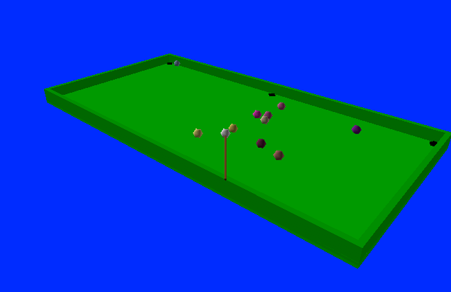

VPool#

Overzicht#
Bij dit project schrijf je een volledig interactief 3D-spel met VPython.
Je spel moet een 3D-interactie zijn die gebruik maakt van “GlowScript” VPython (op het web), met:
Ten minste vier spelobjecten (naar eigen inzicht).
Ten minste twee soorten botsingen, bijvoorbeeld botsingen van een punt en een lijn en van twee punten.
Een vorm van besturing door de gebruiker.
Een doel van het spel!
Optioneel: het kan geen kwaad een “docentmodus” te hebben waarmee het spel makkelijker te spelen (en te winnen) wordt!
Intro VPython#
Als eerste een introductie in VPython of Glowscript VPython heet, dat:
Object-georiënteerd is (alles is georganiseerd met objecten en klassen),
Web-gebaseerd is (alles wordt uitgevoerd op een publieke website), en
Grafisch is (je gaat 3D-modellen bouwen en hun gedrag programmeren)
Het doel van deze intro is de module VPython te verkennen om een 3D-interactie te begrijpen, en uit te breiden.
Documentatie#
Hieronder hebben we een aantal handige links verzameld:
https://www.glowscript.org/: De startpagina waar je inlogt en je programma’s kan vinden
https://www.glowscript.org/docs/VPythonDocs/index.html: Documentatie voor alle objecten, scenes en andere functionaliteiten van VPython en GlowScript.
https://www.glowscript.org/#/user/GlowScriptDemos/folder/Examples/: Voorbeelden (de linkertab die standaard geselecteerd is is voor GlowScript-voorbeelden, dus die heb je nodig).
Je kan altijd nog terugkomen naar deze links; we gaan eerst met een voorbeeld beginnen…
VPython uitvoeren in de browser#
Open Glowscript in je browser. Je hebt een Google-account nodig om in te loggen. Maak als je bent ingelogd een nieuw programma aan en plak deze code erin:
GlowScript 2.8 VPython
# Je hebt de regel hierboven nodig voor VPython in de browser
# Het meest eenvoudige VPython-programma:
box(color=vector(1.0, 1.0, 1.0))
# Je kan de kleur aan passen: de drie getallen zijn
# rood, groen, blauw elk van 0.0 tot en met 1.0
# Voeg daarna een tweede parameter toe: size=vector(2.0, 1.0, 0.1)
# De volgorde van deze getallen: lengte, hoogte, diepte
# Daarna een derde parameter: axis=vector(2, 5, 1)
# De volgorde van deze drie getallen: x, y, z
Je kan het programma nu uitvoeren. Je kan
De kubus draaien (rechtermuisknop, of Command-klik op een Mac)
In- en uitzoomen op de kubus (met het scrollwiel of door te slepen met twee vingers)
De kleur aanpassen#
De kleur wordt opgegeven als een “vector”; je kan dit zien aan de constructor vector(...). De volgorde van de drie elementen van de vector is rood, groen, blauw, en ieder element is een getal van 0.0 tot en met 1.0. Probeer eens wat andere kleuren uit!
De grootte aanpassen#
Naast de kleur kan je ook het formaat van de kubus aanpassen. Dit doe je door middel van de parameter size; kopieer deze uit het voorbeeld, en plak deze in de aanroep van box (er moet wel een komma tussen de twee parameters, zoals gebruikelijk). Dit komt er dan als volgt uit te zien:
box(color=vector(1.0, 1.0, 1.0), size=vector(2.0, 1.0, 0.1))
Ook hier zie je dat size een vector is; de volgorde hier is lengte, hoogte, diepte. Probeer ook het formaat van de kubus aan te passen!
De richting aanpassen#
Je kan ook de richting van de kubus aanpassen, door middel van de parameter axis; kopieer deze ook uit het voorbeeld naar de aanroep van box. Nu ziet de aanroep er zo uit:
box(color=vector(1.0, 1.0, 1.0), size=vector(2.0, 1.0, 0.1), axis=vector(2.0, 5.0, 1.0))
Experimenteer hier ook mee; de volgorde van de parameters van vector is x, y, z. Door deze richting aan te passen bepaal je ook hoe de lengte van size geïnterpreteerd wordt, maar dit kan je eventueel aanpassen met de paramter up. Je kan hier meer informatie over vinden op de naslagpagina voor box().
Hierna gaan je een animatie maken met een beetje physics…
Een physics-simulatie in VPython#
Maak een nieuw programma en plak de volgende (lange!) code erin:
GlowScript 2.8 VPython
#
# physics_starter.py
#
# Een interactie met 3D graphics bouwen met Python
# Documentatie: https://www.glowscript.org/docs/VPythonDocs/index.html
# Voorbeelden: https://www.glowscript.org/#/user/GlowScriptDemos/folder/Examples/
#
scene.bind('keydown', keydown_fun) # Functie voor toetsaanslagen
scene.bind('click', click_fun) # Functie voor muiskliks
scene.background = 0.8*vector(1, 1, 1) # Lichtgrijs (0.8 van 1.0)
scene.width = 640 # Maak het 3D-scherm groter
scene.height = 480
# +++ Begin van het AANMAKEN van OBJECTEN
# We maken de grond door middel van een box (VPython's rechthoekige vorm)
# https://www.glowscript.org/docs/VPythonDocs/box.html
# Merk op dat we deze keer het object dat door "box" wordt gemaakt opslaan in
# een variabele met de naam "ground".
ground = box(size=vector(20, 1, 20), pos=vector(0, -1, 0), color=.4*vector(1, 1, 1))
# Laat de x- en z-as zien (om inzicht te verkrijgen)
# https://www.glowscript.org/docs/VPythonDocs/label.html
x_axis = arrow(axis=vector(5, 0, 0), color=vector(0, 0, .5)) # donkerblauw
x_axis_label = label(pos=vec(6, 0, 0), text='x', color=vector(0, 0, .5))
# x_axis_text = text(pos=vec(7, 0, 0), text='x', color=vector(0, 0, .5))
z_axis = arrow(axis=vector(0, 0, 5), color=vector(0, .5, 0)) # donkergroen
z_axis_label = label(pos=vec(0, 0, 6), text='z', color=vector(0, .5, 0))
# Maak een bol, die we gaan laten bewegen.
# https://www.glowscript.org/docs/VPythonDocs/sphere.html
# Ook nu slaan we de bol op als "ball" zodat we deze later kunnen aanpassen.
ball = sphere(size=1.0*vector(1, 1, 1), color=vector(0.8, 0.5, 0.0)) # ball is een object van de klasse sphere
ball.vel = vector(4.2, 0, 0) # Dit is de beginsnelheid
print("snelheid is nu:", ball.vel) # Afdrukken werkt gewoon
# +++ Eind van het AANMAKEN van OBJECTEN
# +++ Begin van de ANIMATIE
# Andere constanten
RATE = 30 # Het aantal keer dat de while-lus per seconde wordt uitgevoerd
dt = 1.0/RATE # De tijdstap per keer dat de while-lus wordt uitgevoerd
scene.autoscale = False # Voorkomen dat het beeld automatisch wordt aangepast
scene.forward = vector(0, -3, -2) # De scene vanuit de lucht wordt bekeken...
origin = vector(0, 0, 0) # Het is handig om een naam te hebben voor de oorsprong
# Dit is de "event loop" ("gebeurtenissenlus") of "animatielus"
# Elke keer dat deze lus uitgevoerd wordt beweegt alles één tijdstap van dt seconden
#
while True:
rate(RATE) # Maximaal aantal keer per seconden dat de while-lus uitgevoerd wordt
# +++ Begin van het UITVOEREN van de PHYSICS -- werk alle posities elke tijdstap bij
ball.pos = ball.pos + ball.vel*dt # verplaatsing = snelheid*tijd
# +++ Eind van het UITVOEREN van de PHYSICS -- zorg dat alle objecten goed zijn bijgewerkt!
# +++ Begin van BOTSINGEN -- zorg voor botsingen & doe het "goede"
# Als de bol te ver verplaats is, stel dan een nieuwe positie en willekeurige snelheid in
if mag(ball.pos - origin) > 10.0: # mag == lengte van een vector
ball.pos = vector(0, 0, 0) # Stel ball.pos (de positie) opnieuw in
ball.vel = 4.2*vector.random() # Stel een willekeurige snelheid in
ball.vel.y = 0.0 # Zet de y-waarde op nul (geen verticale snelheid)
print("snelheid is nu:", ball.vel)
# +++ Einde van BOTSINGEN
# +++ Begin van het AFHANDELEN van EVENTS -- aparte functies voor
# toetsaanslagen and muiskliks...
def keydown_fun(event):
"""This function is called each time a key is pressed."""
key = event.key
print("toets ingedrukt:", key) # Druk af welke toets is ingedrukt...
if key in 'cC': # Kies een nieuwe kleur voor de bol...
ball.color = randcolor() # Zo kan je je eigen functie aanroepen...
elif key in 'rR': # Stel de snelheid can de bol opnieuw in...
ball.pos = vector(0, 0, 0) # Stel ball.pos (de positie) opnieuw in
ball.vel = 4.2*vector.random() # Stel een willekeurige snelheid in
ball.vel.y = 0.0 # Zet de y-waarde op nul (geen verticale snelheid)
print("snelheid is nu:", ball.vel)
def click_fun(event):
"""This function is called each time the mouse is clicked."""
print("event is", event.event, event.which)
# +++ Einde van het AFHANDELEN van EVENTS
# +++ Andere functies kan je hier neerzetten...
def randcolor():
"""Returns a vector of (r, g, b), randomly selected from 0.0 to 1.0."""
r = random(0.0, 1.0) # Dit is een anders dan random.uniform van Python
g = random(0.0, 1.0) # Maar maar een klein beetje...
b = random(0.0, 1.0)
return vector(r, g, b) # Een kleur is een tuple met drie elementen
# Zie het volgende voorbeeld van implementaties van choice en randint
Probeer maar!
Kijk dan of je kan vinden waar de verschillende functionaliteiten terugkomen in de code. Lees de broncode, waar je\ een aantal zaken kan zien:
Een paar algemene variabelen voor de scene en de achtergrond (gebaseerd op
scene).Twee objecten,
groundenball, van respectievelijke de klassenboxensphere.Een paar variabelen om met de animatie te helpen.
De animatielus of “event loop” met
while True.Wat physics (posities bijwerken en controles op botsingen)
Twee functies die events afhandelen: één voor toetsaanslagen, één voor muiskliks.
Probeer wat toetsen in het 3D-scherm om te zien wat er afgedrukt wordt…
Eén extra functie (die een willekeurige kleur genereert).
!!! danger “Event loop”
Je programma mag maar één event loop, een lus met while True, hebben. Als je probeert om een andere while True binnen de eerste te zetten, zal je programma “vast” komen te zitten in de binnenste lus en dus niet goed werken (de gebeurtenissen en graphics in de buitenste lus worden niet bijgewerkt).
Maak nu onderstaande aanpassingen aan de code en probeer ze uit, zodat je de code beter snapt en weet hoe elk gedeelte van dit programma werkt:
De achtergrondkleur en schermgrootte aanpassen#
Pas de waarde van scene.background aan om de achtergrondkleur te veranderen, en de waarde van scene.width en scene.height aan om de schermgrootte aan te passen. Probeer ze alledrie!
Handigheidje
De expressie 0.42 * vector(1, 1, 1) is een snelle manier om vector(0.42, 0.42, 0.42), oftewel donker grijs, te krijgen…
Python-fouten
Frustrerend genoeg negeert de browser-Python fouten soms gewoon; dan is het debuggen een stuk lastiger! Test daarom één verandering per keer, en test het vaak!
De klasse van het bewegende object veranderen#
Verander de klasse van het bewegende object van sphere naar box; pas de naam van het object niet aan! Hierdoor blijft de rest van de code gewoon werken. Probeer ook vooral de kleur, beginpositie, beginsnelheid, richting, grootte etc. aan te passen!
Andere vormen
Probeer twee of meer andere vormen! De documentatie van Glowscript bevat een overzicht van de vormen. In het linkerdropdownmenu op deze pagina kan je een vorm kiezen, en je krijgt dan de details van die vorm, oftwel klasse te zien…
Verander het universum! (Of in ieder geval de natuurwetten…)#
Pas de instellingen voorafgaand aan de animatielus (“event loop”) nu nog even niet aan! Je ziet dat hier een aantal instellingen zijn:
RATEis het aantal frames per second dat getoond wordt (de browser gaat dit in ieder geval proberen te halen).scene.autoscale = Falsebetekent dat je handmatig moet zoomen (Truezoomt automatisch, maar dit is eerder vervelend dan handig).scene.forwardis de vector met de richting van de camera; die staat voor nu wel goed.originis een handig punt, dus die hebben we een naam gegeven (dit is optioneel, maar kan handig zijn).
Voeg wel wrijving toe, na de regel die de verplaatsing bepaalt met ball.pos = ball.pos + ball.vel * dt.
Hiervoor moet je een extra tegel toevoegen die de vector ball.vel aanpast:
ball.vel = ball.vel * 0.98
Bekijk wat er gebeurt: je hebt nu wrijving in de wereld geprogrammeerd! Je kan de wrijving ook omkeren, dat wil zeggen, zorgen dat de bal juist steeds sneller beweegt:
ball.vel = ball.vel * 1.05
Je hebt de complete vrijheid om je natuurwetten zo in te richten als je wilt! Je mag de wrijving laten staan of weghalen voor de volgende opgaves, hoe je maar wilt.
Botsingen en interacties maken#
We gaan nu de code die botsingen berekent bekijken en veranderen. Je ziet in de eerste plaats de functie mag; deze functie berekent de lengte (magnitude) van een vector aan de hand van de stelling van Pythagoras (dit heet ook wel “Euclidische afstand”). We berekenen met mag(ball.pos - origin) dus de totale afstand van ball.pos naar origin. Kijk eens wat er gebeurt als je het getal waarmee vergeleken wordt van 10.0 in 20.0 verandert!
Probeer nu de positie waarop de bal wordt teruggezet te veranderen, en de snelheid waarmee de bal wordt teruggezet groter te maken. Kijk ook eens wat er gebeurt als je de regel ball.vel.y = 0.0 in commentaar zet; spacy!
De event handlers aanpassen#
Lees eerst de onderste drie functies. Je ziet nu bijvoorbeeld dat keydown_fun de variabele ball gebruikt maar dat die niet wordt meegegeven aan de functie! We noemen ball ook wel een globale variabele, wat betekent dat deze automatisch beschikbaar is in alle functies die gedefinieerd zijn nadat de variabele gedefinieerd is.
Probeer ook eens te veranderen wat er afgedrukt wordt in keydown_fun; je ziet dat je hier volledige controle hebt. Je kan bijvoorbeeld proberen het print-statement zo aan te passen dat je kan zien wat de r-, g- en b-waardes van de nieuwe kleur zijn.
De andere twee functies zijn op zich goed, maar als je andere dingen wilt proberen kan dat natuurlijk… Vergeet dan niet vaak te testen!
Ok, je hebt nu een idee van hoe VPython physics en interacties tussen objecten ondersteund en kunt hier aan sleutelen…
Je gaat hierna een eigen interactie (of spel…) maken. Laten we eerst echter beginnen met een wat uitgebreider beginpunt in het volgende deel…
Een eigen spel in VPython#
Maak weer een nieuw programma en plak de volgende (opnieuw lange) code erin:
GlowScript 2.8 VPython
#
# game_starter.py
#
# Een interactie met 3D graphics bouwen met Python
# Documentatie: https://www.glowscript.org/docs/VPythonDocs/index.html
# Voorbeelden: https://www.glowscript.org/#/user/GlowScriptDemos/folder/Examples/
#
scene.bind('keydown', keydown_fun) # Functie voor toetsaanslagen
scene.bind('click', click_fun) # Functie voor muiskliks
scene.background = 0.8 * vector(1, 1, 1) # Lichtgrijs (0.8 van 1.0)
scene.width = 640 # Maak het 3D-scherm groter
scene.height = 480
# +++ Begin van het AANMAKEN van OBJECTEN
# Deze functies maken "container"-objecten, ofwel "compounds"
def make_alien(starting_position, starting_vel=vector(0, 0, 0)):
"""The lines below make a new "frame", which is a container with a
local coordinate system.
The arguments to make_alien allow for any initial starting position
and initial starting velocity, with a default starting velocity
of vector(0, 0, 0).
Compounds can have any number of components. Here are the
alien's components:
"""
alien_body = sphere(size=1.0 * vector(1, 1, 1), pos=vector(0, 0, 0), color=color.green)
alien_eye1 = sphere(size=0.3 * vector(1, 1, 1), pos=.42 * vector(.7, .5, .2), color=color.white)
alien_eye2 = sphere(size=0.3 * vector(1, 1, 1), pos=.42 * vector(.2, .5, .7), color=color.white)
alien_hat = cylinder(pos=0.42 * vector(0, .9, -.2), axis=vector(.02, .2, -.02), size=vector(0.2, 0.7, 0.7), color=color.magenta)
alien_objects = [alien_body, alien_eye1, alien_eye2, alien_hat] # maak een lijst die we "aan elkaar plakken" met een compound
# we gaan nu een compound maken -- we noemen hem com_alien:
com_alien = compound(alien_objects, pos=starting_position)
com_alien.vel = starting_vel # stel de beginsnelheid in
return com_alien
# We maken de grond door middel van een box (VPython's rechthoekige vorm)
# https://www.glowscript.org/docs/VPythonDocs/box.html
ground = box(size=vector(20, 1, 20), pos=vector(0, -1, 0), color=.4*vector(1, 1, 1))
# We maken twee muren, ook met een box
wall_a = box(pos=vector(0, 0, -10), axis=vector(1, 0, 0), size=vector(20, 1, .2), color=vector(1.0, 0.7, 0.3)) # geel
wall_b = box(pos=vector(-10, 0, 0), axis=vector(0, 0, 1), size=vector(20, 1, .2), color=color.blue) # blauw
# Een bal die we kunnen besturen
ball = sphere(size=1.0*vector(1, 1, 1), color=vector(0.8, 0.5, 0.0)) # ball is een object van de klasse sphere
ball.vel = vector(0, 0, 0) # dit is de beginsnelheid
# We maken twee aliens met twee aanroepen naar de functie make_alien (hierboven)
alien = make_alien(starting_position=vector(6, 0, -6), starting_vel=vector(0, 0, -1))
alien2 = make_alien(starting_position=vector(-10, 5, -10)) # geen startsnelheid
# +++ Eind van het AANMAKEN van OBJECTEN
# +++ Begin van de ANIMATIE
# Andere constanten
RATE = 30 # Het aantal keer dat de while-lus per seconde wordt uitgevoerd
dt = 1.0/RATE # De tijdstap per keer dat de while-lus wordt uitgevoerd
scene.autoscale = False # Voorkomen dat het beeld automatisch wordt aangepast
scene.forward = vector(0, -3, -2) # De scene vanuit de lucht wordt bekeken...
# Dit is de "event loop" ("gebeurtenissenlus") of "animatielus"
# Elke keer dat deze lus uitgevoerd wordt beweegt alles één tijdstap van dt seconden
#
while True:
rate(RATE) # Maximaal aantal keer per seconden dat de while-lus uitgevoerd wordt
# +++ Begin van het UITVOEREN van de PHYSICS -- werk alle posities elke tijdstap bij
alien.pos = alien.pos + alien.vel*dt # Werk de positie van de alien bij
ball.pos = ball.pos + ball.vel*dt # Werk de positie van de bal bij
# +++ Eind van het UITVOEREN van de PHYSICS -- zorg dat alle objecten goed zijn bijgewerkt!
# +++ Begin van BOTSINGEN -- zorg voor botsingen & doe het "goede"
# Als de bal wall_a raakt
if ball.pos.z < wall_a.pos.z: # Geraakt -- vergelijk de z-positie
ball.pos.z = wall_a.pos.z # Zorg dat de bal binnen de grenzen blijft
ball.vel.z *= -1.0 # Draai de z-snelheid om
# Als de ball wall_b raakt
if ball.pos.x < wall_b.pos.x: # Geraakt -- vergelijk de x-positie
ball.pos.x = wall_b.pos.x # Zorg dat de bal binnen de grenzen blijft
ball.vel.x *= -1.0 # Draai de x-snelheid om
# Geef de alien verticale snelheid als de bal de alien raakt
if mag(ball.pos - alien.pos) < 1.0:
print("Op naar de sterren, en daar voorbij!")
alien.color = color.gray(.8)
alien.vel = vector(0, 1, 0)
# Als de alien te ver loopt, stel deze dan willekeurige opnieuw in -- maar alleen
# als deze niet verticaal beweegt.
if mag(alien.pos) > 10 and alien.vel.y < 1:
alien.pos.x = choice([-6, 6])
alien.pos.z = choice([-6, 6])
alien.vel = 2*vector.random() # Willekeurige vector uit de module
alien.vel.y = 0.0 # Geen verticale snelheid
# +++ Einde van BOTSINGEN
# +++ Begin van het AFHANDELEN van EVENTS -- aparte functies voor
# toetsaanslagen and muiskliks...
def keydown_fun(event):
"""This function is called each time a key is pressed."""
ball.color = randcolor()
key = event.key
ri = randint(0, 10)
print("toets:", key, ri) # Drukt de ingedrukte toets af
amt = 0.42 # Hoeveel de snelheid per toetsaanslag wordt aangepast
if key == 'up' or key in 'wWiI':
ball.vel = ball.vel + vector(0, 0, -amt)
elif key == 'left' or key in 'aAjJ':
ball.vel = ball.vel + vector(-amt, 0, 0)
elif key == 'down' or key in 'sSkK':
ball.vel = ball.vel + vector(0, 0, amt)
elif key == 'right' or key in "dDlL":
ball.vel = ball.vel + vector(amt, 0, 0)
elif key in ' rR':
ball.vel = vector(0, 0, 0) # Opnieuw beginne! via de spatiebalk, " "
ball.pos = vector(0, 0, 0)
def click_fun(event):
"""This function is called each time the mouse is clicked."""
print("event is", event.event, event.which)
# +++ Einde van het AFHANDELEN van EVENTS
# +++ Andere functies kan je hier neerzetten...
def choice(L):
"""Implements Python's choice using the random() function."""
length = len(L) # Haal de lengte op
random_index = int(length * random()) # Kies een willekeurige index
return L[random_index] # Geef dat element terug
def randint(low, hi):
"""Implements Python's randint using the random() function.
returns an int from low to hi _inclusive_ (so, it's not 100% Pythonic)
"""
if hi < low:
low, hi = hi, low # Draai ze om als ze verkeerd om staan!
length = int(hi) - int(low) + 1. # Bereken het verschil en voeg 1 toe
rand_value = length * random() + int(low) # Kies een willekeurige waarde
return int(rand_value) # Geef het integergedeelte terug
def randcolor():
"""Returns a vector of (r, g, b) random from 0.0 to 1.0."""
r = random(0.0, 1.0)
g = random(0.0, 1.0)
b = random(0.0, 1.0)
return vector(r, g, b) # Een kleur is een tuple met drie elementen
Dit is een behoorlijk lang stuk code! Laten we de code stukje voor stukje bekijken en aanpassen, zodat je kan zien hoe het werkt en hoe je het kan gebruiken.
Probeer het eerst uit, en probeer een gevoel te krijgen voor hoe de gebruikte coördinaten werken:

Probeer het spel uit#
We slaan eerst de bovenste instellingen van scene en de functie make_alien over… Hier komen we later op terug. Scroll door naar de regels waar deze objecten gemaakt worden:
groundenball, zoals eerderwall_aenwall_bzijn nieuwe objecten, allebei zijn ze een box, met aparte kleuren (geel en blauw)alienenalien2zijn nieuwe objecten die samengesteld zijn uit andere objecten; tof! We bespreken samenvoegen later…
Probeer het spel nu uit: gebruik de pijltjestoetsen (of ijkl of wasd) om de ball snelheid te geven. Je ziet dat de computer de alien bestuurt, maar jij kan de ball besturen. Het doel van het spel is de alien met de bal te raken; als dat lukt, stijgt de alien op en drukt een bericht af…
Meer is er nog niet! Ja, dit spel heeft nog wat werk nodig!! Laten we dus maar beginnen…
Maak je eigen muren en botsingen#
Probeer eerst uit te zoeken hoe de code die de muren maakt werkt. Maak dan twee extra muren om de “tafel” of “arena” af te maken; gebruik hier duidelijke kleuren voor!
Lees daarna de code die de botsingen met de muren regelt, en zoek uit hoe deze werkt. Je ziet dat de positie van de bal aangepast wordt zodat deze niet langer “achter de muur” is na een botsing. Als je dat niet zou doen, kan de bal “vast komen te zitten” in de muur… Voeg vervolgens code toe voor botsingen met de twee nieuwe muren.
Probeer het spel weer uit! Het spel speelt zich nu grotendeels vanzelf: de bal kan rondstuiteren door de arena en komt uiteindelijk de alien tegen…
Ongedaan maken?
Je zult merken dat er in de editor van Glowscript geen functie voor “ongedaan maken” is; kopieer daarom regelmatig het hele programma naar een bestand op je computer (met je teksteditor, bijvoorbeeld VSCode). Het is belangrijk om een werkende versie te hebben waar je op kan terugvallen; dit is bovendien hoe je straks je programma gaat inleveren!
Een hulpfunctie voor botsingen met de arena#
De code voor botsingen met de muren van de arena is nu nog specifiek voor het object ball. We gaan hier nu een aparte hulpfunctie voor maken, zodat deze code door alle bewegende objecten gebruikt kan worden.
Don’t repeat yourself
“Don’t repeat yourself” is een programmeursmantra; het wordt ook wel het DRY-principe genoemd. Goede programmeurs zijn een beetje lui: ze willen liever niet dezelfde code herhalen, dus maken ze er een hulpfunctie voor!
Je ziet dat de code die deze botsingen nu regelt de variabele ball gebruikt om te kijken of de muren geraakt zijn; we gaan daar een argument van de functie van maken! Je kan dit doen door de code voor de botsingen met de arena (dit zijn vermoedelijk vier if-statements) te verplaatsen naar het gedeelte met “andere functies” onderaan het bestand. Voeg daarna een functie-signature met docstring toe boven deze regels:
def arena_collide(ball):
"""Arena collisions!
Ball must have a .vel field and a .pos field.
"""
Voeg nu een aanroep arena_collide(ball) toe waar je de originele regels hebt weggeknipt, zodat de code die je verplaatst hebt nog wel op de goede plek wordt aangeroepen. Je kan nu ook de regel arena_collide(alien) toevoegen; probeer dit eens! Hiervoor is het wel nodig dat je het stuk code dat de alien verplaatst weghaalt of in commentaar zet. Dit begint met dit commentaar: # Als de alien te ver loopt, stel deze dan willekeurige opnieuw in. Zowel de alien als de bal moeten nu rondstuiteren… yay!
Bedenk zelf een interactie of spel!#
Je hebt nu een scala aan 3D objecten die je allemaal kan onderwerpen aan physics, botsingen en toetsaanslagen… De rest van de opdracht is om een aantal aanpassingen te maken aan de startcode om je eigen spel of interactie te maken. Wat het spel doet en hoe het eruit ziet mag je helemaal zelf bedenken; maar je moet ten minste TWEE van de onderstaande opties toevoegen (of meer; je kan VPython als project kiezen, als je dat wilt):
Voeg één of meer extra niet-bewegende objecten toe aan het “speelveld” (bomen, ruimteschepen, bedenk het maar…).
Maak ten minste één nieuw object dat uit zichzelf beweegt (meer aliens; of andere dingen?!).
Voeg een extra interactie toe tussen de nieuwe objecten en het door de gebruiker bestuurde object (botsen of stuiteren, bijvoorbeeld).
Breid het bestaande
compound-object (hiermee behandel je meerdere objecten als één object) uit of voeg een nieuwe toe (zie hieronder).Verander het door de gebruiker bestuurde object (of voeg een extra bestuurbaar object toe, met een manier om tussen de objecten te wisselen…). Dit kan lastig zijn, maar wel leuk!
Vergeet niet regelmatig te testen, en zo vaak als je kan verdragen het hele programma naar een bestand op je computer te kopiëren!
Compound-objecten#
Je kan in VPython samengestelde of compound-objecten bouwen; als je wilt proberen deze zelf te bouwen of een bestaande uit te breiden, kijk dan naar de functie make_alien bovenaan het bestand. Deze functie maakt een aantal onderdelen in hun eigen coördinatensysteem.
Eerst maakt ze maakt een lijst met deze onderdelen en roept dan com_alien = compound(alien_objects, pos=starting_position) aan. Dit maak een object aan met de naam com_alien, die van de klasse (of type) compound is, en plakt vervoplgens alle onderdelen aan elkaar vast en geeft ze een gedeeld bestaan; ze kunnen niet langer los van elkaar verplaatst worden, maar het geheel kan wel verplaatst worden.
Probeer eens je eigen karakter te maken; het kan een variatie op de alien zijn (een derde oog, misschien? of nog meer detail…), maar ook iets compleet anders…
Beginpositie
Merk op dat door de vector starting_position mee te geven, deze enkele functie zoveel verschillende samengestelde objecten kan maken als je maar wilt. Deze techniek wordt gedemonstreerd door de twee aliens in het oorspronkelijke programma…
Andere handige functies#
Deze pagina bevat een aantal functies die je misschien wilt gebruiken, proberen of aanpassen…. Hij bevat nu:
Een functie
wall_collide(wall, object)voor muren onder elke hoek in het xz-vlak. De y-componenten worden genegeerd, maar je zou de functie kunnen aanpassen om hier ook rekening mee te houden als je wilt.
Als je andere handige functies gemaakt hebt, laat het ons weten, dan voegen we ze toe!
Voorbeelden die je kan gebruiken…#
GlowScript VPython heeft een aantal voorbeelden die je als beginpunt kan gebruiken: https://www.glowscript.org/#/user/GlowScriptDemos/folder/Examples/ De linkertab is voor GlowScript, de aanpak die wij gebruiken (de andere tabs zijn voor dit project niet handig).
Naast het practicum van week 11 kan je deze verzameling voorbeeldprogramma’s voor GlowScript gebruiken die laten zien:
Botsingen met muren: Een voorbeeld waarin herkend wordt of een bol tegen de langste kanten van een muur (of een andere box) botst.
Botsingen tussen twee bollen: Een voorbeeld die controleert of er een botsing is tussen twee bollen en de snelheden realistisch aanpast.
Botsingen tussen meerdere bollen: Een voorbeeld die controleert of er een botsing is tussen meerdere bollen en de snelheden realistisch aanpast.
Willekeurig beginpunt: Een voorbeeld dat laat zien hoe je een object willekeurig kan poisitioneren (in dit geval elke keer als er op
'r'gedrukt wordt).
Projecteisen#
Dit is waarschijnlijk het project met de meeste vrijheid. Desondanks zijn er nog steeds een aantal eisen waaraan hij moet voldoen; maar je hebt ook veel vrijheid om je eigen draai aan je spel te geven!
Hier zijn de eisen (en een paar “niet-eisen”) voor je spel:
Als het spel start, moet het een driedimensionale “tafel” met een aantal “poolballen” tonen. Je spel mag iets heel anders zijn dan pool, maar het moet iets van een afgebakend gebied en een aantal “actoren” hebben die daarin bewegen.
Om het simpel te houden spreken we hieronder overal over “poolballen” als we de actoren of karakters in je spel bedoelen.
Er moet een “speelbal” zijn, dat wil zeggen, een object dat de speler kan stoten of rechtstreeks besturen, en ten minste 3 andere objecten waarmee de speelbal kan interacteren.
Er moeten “muren” of andere obstakels zijn die het speelveld begrenzen en waar spelobjecten niet doorheen kunnen. Ze moeten “lineaire botsingen” ondersteunen, dat wil zeggen, botsingen met een object die je als punt kan beschouwen en een uitgerekt object (een lijn of vlak). Een bal die de muur raakt moet de wet dat “hoek van inval is gelijk aan hoek van weerkaatsing” gebruiken.
Er moeten een aantal gaten in de tafel zitten waar de ballen in kunnen vallen; of een ander idee van “doelen” of “bestemmingen”. Specifiek moeten hier een aantal interacties tussen twee punten voor gemodelleerd en geimplementeerd worden, naast de interacties tussen een punt en een lijn hierboven.
Om de benodigde interacties samen te vatten, je programma moet botsingen en weerkaatsingen kunnen afhandelen. Dat wil zeggen dat de verschillende objecten duidelijk zichtbaar met elkaar moeten interacteren. Hiervoor moet je spel in ieder geval een aantal botsingen tussen bollen ondersteunen, dus botsingen tussen twee objecten die gedefinieerd worden door een punt. Ze hoeven geen bollen te zijn, maar dat mag wel.
Specifiek moeten ballen (karakters) niet door elkaar heen kunnen gaan. Het is leuk als je de botsingen tussen twee ballen natuurkundig correct simuleert, maar je mag ook andere benaderingen of totaal niet-natuurkundige botsingen gebruiken.
Je spel moet wel ondersteunen dat meerdere ballen of objecten “tegelijk” bewegen. Als bijvoorbeeld bal
XbalYraakt dan zal vermoedelijk balX(in een zekere richting) blijven bewegen, en begint balYte bewegen. Beide ballen moeten een poosje blijven bewegen. Bovendien kunnen balXen balYnu ook andere ballen raken en die moeten dan ook een poosje bewegen. Het is in andere woorden niet voldoende als er altijd maximaal één bal beweegt in je programma.Zie de tip hieronder over hoe je botsingen tussen verschillende ballen tegelijk kan berekenen…
Je moet een duidelijk beschreven doel van het spel hebben waarbij de voorwaarden om te “winnen” helder zijn. Het mag een spel voor één speler zijn, of voor twee, of een spel tegen de computer. Dit mag je zelf bepalen!
Optioneel: het is geen slecht idee om een “docentmodus” te hebben waarbij het spel makkelijker te spelen of te winnen is.
Je programma moet het de gebruiker vertellen als ze het spel gewonnen hebben!
Je programma moet een makkelijk te gebruiken VPython-interface hebben (een combinatie van muis en toetsenbord) waarmee de gebruiker de “speelbal” vanuit verschillende richtingen (en optioneel met verschillende snelheden) kan spelen. Je hoeft geen echte “keu” te hebben, maar dit mag natuurlijk wel. Er zijn veel andere manieren om deze interface te maken en je mag er zelf één kiezen.
Bij het inleveren van het begin, de milestone en de oplevering moet je een platte-tekstbestand
begin.txt,milestone.txtofoplevering.txtmeeleveren die het doel van het spel en hoe de interface werkt beschrijft. Je kan ook een korte samenvatting van de besturing tonen in het spel zelf.
Je mag natuurlijk extra functionaliteiten toevoegen als je dat wilt!
Opmerkingen en tips#
Algemene tips#
Hier zijn een paar tips die handig kunnen zijn:
Vergeet niet dat de naslagpagina van VPython de volledige documentatie bevat.
-
Opmerking
Deze code werkt niet in GlowScript, maar er zitten wel een paar handige ideeën in.
Het VPython-object
arrowkan gebruikt worden in plaats van het tekenen van een keu om de richting aan te geven waarin de speelbal geraakt zal worden. De gebruiker kan bijvoorbeeld de muis en het toetsenbord gebruiken om een pijl die op de speelbal gericht staat te draaien. Een andere gebruikersinvoer, bijvoorbeeld de spatiebalk, kan dan gebruikt worden om de speelbal te stoten.Bekijk de naslagpagina van VPython om te zien hoe je gebruikersinvoer van de muis en het toetsenbord kan lezen…
Het gebruik van een vector om de richting waarin de bal beweegt bij te houden maakt de animatie makkelijker. Bovendien, als de bal dan een ander object raakt hoef je alleen maar de vector op de juiste manier bij te werken.
Wrijving implementeren#
Je zou kunnen overwegen om wrijving te implementeren door alle snelheden in elke stap te vermenigvuldigen met een constante die kleiner dan 1 is. Bedenk je dat de snelheid op deze manier nooit nul wordt! Het kan frustrerend zijn als het heel lang duurt voordat objecten stil komen te liggen; voordat je een volgende stoot maakt, bijvoorbeeld. Eén manier om deze frustratie te voorkomen is te kijken of er objecten zijn die erg langzaam bewegen en de snelheid daarvan gewoon op 0 te zetten. Als alle snelheden 0 zijn kan de volgende “zet” in het spel gedaan worden.
Botsingen tussen veel objecten#
Het lijkt misschien dat je heel veel conditionele statements nodig hebt om botsingen tussen veel objecten te verwerken, maar je hoeft ze niet allemaal los te doen!
Wat je in deze situatie kan doen is eerst al je objecten te maken:
ball1 = sphere(...)
ball2 = sphere(...)
ball3 = sphere(...)
ball4 = sphere(...)
...
en dan een lijst maken: balls = [ball1, ball2, ball3, ball4, ...]
Om dan botsingen te berekenen, kan je twee keer door deze lijst lussen. Merk op dat we elk paar maar één keer controleren!
for i in range(len(balls)):
for j in range(i + 1, len(balls)): # merk op dat we beginnen bij i + 1
if collide(balls[i], balls[j]):
# doe iets toepasselijks...
Op deze manier kan je een enkele functie (collide) schrijven om te controleren of twee ballen botsen, en dat dan gebruiken voor alle paren…
Als je code wilt voor realistische “elastische” botsingen, kan je dit codevoorbeeld bekijken.